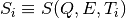
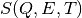
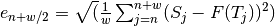
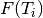
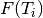

ERROR: No algorithm ‘DSFinterp’ version ‘1’, skipping directive
ERROR: No algorithm ‘DSFinterp’ version ‘1’, skipping directive
ERROR: No algorithm ‘DSFinterp’ version ‘1’, skipping directive
ERROR: No algorithm ‘DSFinterp’ version ‘1’, skipping directive
DSFinterp(Workspaces, OutputWorkspaces, [LoadErrors], [ParameterValues], [LocalRegression], [RegressionWindow], [RegressionType], TargetParameters], [Version])
This algorithm requires python package dsfinterp, available at the python package index. If the package is not present, this algorithm will not be available. To install, type in a terminal ‘sudo pip install dsfinterp’
For every “dynamical channel” defined by one particular (Q,E) pair, the sequence of scalars {} ordered by increasing value of T is interpolated with a cubic spline, which then can be invoked to obtain  at any T value.
Errors in the structure factor are incorporated when constructing the spline, so that the spline
need not necessarily pass trough the  points.
This has the desirable effect of producing smooth spline curves when the variation of the
structure factors versus
points.
This has the desirable effect of producing smooth spline curves when the variation of the
structure factors versus  contains significant noise.
For more details on the construction of the spline, see UnivariateSpline
contains significant noise.
For more details on the construction of the spline, see UnivariateSpline

Local quadratic regression of windowsize w=7 starting at index n=2
If the structure factors have no associated errors, an scenario typical of structure factors derived from simulations,
then error estimation can be implemented with the running, local regression option.
A local regression of windowsize  starting at index
starting at index  performs a
linear squares minimization
performs a
linear squares minimization  on the set of points
on the set of points  .
After the minimization is done, we record the expected value and error at
.
After the minimization is done, we record the expected value and error at  :
:
value: 
error: 
As we slide the window along the T-axis, we obtain values and errors at every  .
We use the {} values and {
.
We use the {} values and { } errors to produce a smooth spline,
as well as expected errors at any value.
} errors to produce a smooth spline,
as well as expected errors at any value.
Our example system is a simulation of a small crystal of octa-methyl silsesqioxane molecules.
A total of 26 molecular dynamics simulations were performed under different values of the energy barrier
to methyl rotations,  . Dynamics structure factors S(Q,E) were derived from each simulation.
. Dynamics structure factors S(Q,E) were derived from each simulation.

Interpolated spline (solid line) with associated errors at one (Q,E) dynamical channel. Red dots are values from the simulation used to construct the spline.
There are as many splines as dynamical channels. The algorithm gathers the interpolations for each channel and aggregates them into an interpolated structure factor.

Interpolated structure factor  , in logarithm scaling, at fixed
, in logarithm scaling, at fixed  .
.
In this example, we load experimental QENS data derived from a powder of octa-methyl silsesquioxane microcrystals at temperatures 100 150 200 250 300 350, then user DSFinterp to guess structure factors for temperatures 175 and 275. Finally, we load experimental data for these two temperatures so that we can compare with the DSFinterp predictions.
Note
To run these usage examples please first download the usage data, and add these to your path. In Mantid this is done using Manage User Directories.
temp_flt = [100, 150, 200, 250, 300, 350]
workspaces = ['exp100K', 'exp150K', 'exp200K', 'exp250K', 'exp300K', 'exp350K']
for i in range( len(temp_flt) ):
LoadNexus(FileName='DSFinterp/{0}.nxs'.format(workspaces[i]), OutputWorkspace=workspaces[i]) #load QENS data
target_temps = [175, 225]
outworkspaces = ['int175K', 'int225K']
import dsfinterp # Have you installed the dsfinterp module? (pip install dsfinterp)
DSFinterp(Workspaces=workspaces, ParameterValues=temp_flt, RegressionWindow=0, TargetParameters=target_temps, OutputWorkspaces=outworkspaces)
#Now load experimental data for target temperatures
LoadNexus(FileName='DSFinterp/exp175K.nxs', OutputWorkspace='exp175K')
LoadNexus(FileName='DSFinterp/exp225K.nxs', OutputWorkspace='exp225K')
#Compare one of the predicted spectrum with a fit to experimental data
myFunc= 'name=TabulatedFunction,Workspace=int225K,WorkspaceIndex=8,Scaling=1.00424'
fitStatus, chiSq, covarianceTable, paramTable, fitWorkspace =\
Fit(Function=myFunc, InputWorkspace='exp225K', WorkspaceIndex=8, Output='fit')
ERROR: No algorithm ‘DSFinterp’ version ‘1’, skipping directive
ERROR: No algorithm ‘DSFinterp’ version ‘1’, skipping directive